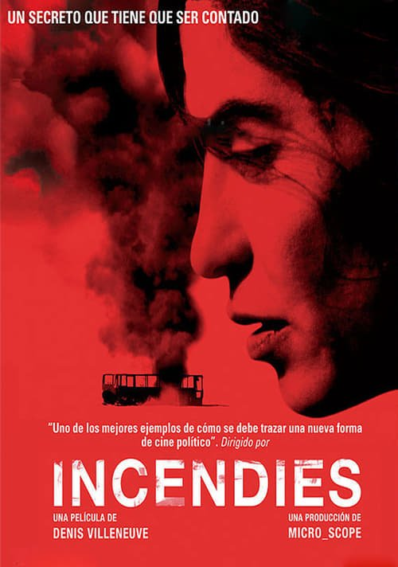

Incendies (2010)
Sinopsis Rápida
Dos gemelos reciben dos cartas de su madre moribunda que desencadenan un viaje desgarrador al Líbano, revelando secretos familiares devastadores y una verdad impactante sobre su origen.
Sinopsis Detallada
Incendies es una película conmovedora e inquietante que sigue a Jeanne y Simon, mellizos que, tras la muerte de su madre, deben cumplir su último deseo: entregar dos cartas, una al padre que creían muerto y otra a un hermano desconocido. Su viaje al devastado Líbano les sumerge en un pasado doloroso y lleno de secretos de guerra y violencia, obligándoles a confrontar una verdad que transformará para siempre su comprensión de su propia identidad y su familia. La película te atrapará desde el principio con su intriga, te mantendrá al borde del asiento con su suspenso y te dejará conmocionado por la cruda realidad que expone.
¿Por qué tenés que verla?
- Una historia familiar profundamente conmovedora que te dejará sin aliento.
- La poderosa dirección de Denis Villeneuve crea una atmósfera tensa y emotiva.
- Incendies ha sido aclamada por la crítica y ha recibido numerosos premios internacionales, consolidándose como una obra maestra del cine contemporáneo.
- Explora temas complejos como la identidad, el trauma y el legado del pasado.
Idea Extra
Análisis del simbolismo en Incendies: Un estudio de las metáforas visuales y literarias que estructuran la narrativa y amplían su significado.
{{CONTENIDO_RELACIONADO}}